가스기능장 (2007-07-15 기출문제)
1과목: 임의 구분
1. 콕에 대한 설명 중 틀린 것은?
- 콕은 퓨즈콕ㆍ상자콕 및 주물연소기용 노즐콕으로 구분할 것
- 완전히 열었을 때의 핸들의 방향은 유로의 방향과 직각일 것
- 과류차단안전기구가 부착된 콕의 작동유량은 입구압이 1±0.1kPa인 상태에서 측정하였을 때 표시유량의 ±10% 이내일 것
- 퓨즈콕ㆍ상자콕 및 주물연소기용 노즐콕의 핸들 회전력은 58.8Nㆍcm 이하일 것
(정답률: 90%)

2. 스크류 압축기의 특징에 대한 설명으로 옳은 것은?
- 기초, 설치 면적이 크다.
- 토출압력 변화에 따른 용량의 변화가 크다.
- 저속 회전이다.
- 토출 가스에 맥동이 생기지 않는다.
(정답률: 65%)
3. 다음 보기에서 설명하는 응축기의 종류는?
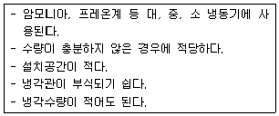
- 입형 쉘 앤드 튜브식 응축기
- 횡형 쉘 앤드 튜브식 응축기
- 7 통로식 응축기
- 대기식 브리다형 응축기
(정답률: 80%)
4. 가스크로마토그래피(Gaschromatography)의 구성 장치가 아닌 것은?
- 검출기(detector)
- 유량계(flowmeter)
- 컬럼(column)
- 반응기(reactor)
(정답률: 80%)
5. 다음 중 분해폭발성 가스는?
- 산소
- 질소
- 아세틸렌
- 프로판
(정답률: 90%)
6. 고압가스의 제조방법 중 안전관리상 옳은 것은?
- 산소를 용기에 충전할 때에는 용기내부에 유지류를 제거하고 충전한다.
- 시안화수소의 안정제로 물을 사용한다.
- 산화에틸렌을 충전시에는 산 및 알칼리로 세척한 후 충전한다.
- 아세틸렌은 3.5MPa으로 압축하여 충전하여 충전할 때에는 희석제로 이산화탄소를 사용한다.
(정답률: 82%)
7. 고압가스 장치에 사용되는 압력계 중 탄성식 압력계가 아닌 것은?
- 링밸런스식 압력계
- 부르돈관식 압력계
- 벨로우즈 압력계
- 다이어프램식 압력계
(정답률: 80%)
8. 고압가스분출시 정전기가 가장 발생하기 쉬운 경우는?
- 가스의 분자량이 적은 경우
- 가스의 온도가 높은 경우
- 가스가 건조되어 있는 경우
- 가스 속에 액체나 고체의 미립자가 있을 경우
(정답률: 76%)
9. 다음 보기에서 설명하는 강(鋼)으로 가장 옳은 것은?
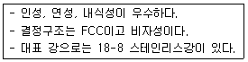
- 구리-아연강(Cu-Zn steel)
- 구리-주속강(Cu-Sn steel)
- 몰리브덴-크롬강(Mo-Cr steel)
- 크롬-니켈강(Cr-Ni steel)
(정답률: 97%)
10. 다음 가스와 검지를 위한 시험지가 틀리게 짝지어진 것은?
- 아세틸렌-초산납시험지
- 일산화탄소-염화파라듐지
- 염소-요오드화칼륨전분지
- 포스겐-하리슨시험지
(정답률: 78%)
11. 다음 중 소석회에 이해 제독이 가능한 가스는?
- 염소
- 황화수소
- 암모니아
- 시안화수소
(정답률: 71%)
12. 수소(H2)가스의 공업적 제조법이 아닌 것은?
- 물의 전기분해법
- 공기액화 분리법
- 수성가스법
- 석유의 분해법
(정답률: 82%)
13. 조성형 샘플링 검사는 검사에 로트가 계속해서 제출될 경우에 그 품질에 따라 검사의 강약을 조정하는 검사이다. 다음 중 이 검사에 해당하지 않는 것은?
- 무시험 검사
- 보통 검사
- 수월한 검사
- 까다로운 검사
(정답률: 78%)
14. 다음 중 프레온(R-12) 냉동장치에 사용하기에 가장 부적당한 금속은?
- 구리
- 마그네슘
- 황동
- 강
(정답률: 83%)
15. 엔트로피(entropy)에 대한 설명 중 틀린 것은?
- 열출입이 없는 단열변화의 경우에는 엔트로피의 증감은 없다.
- 가역과정에서는 불변이고, 비가역과정에서는 증가한다.
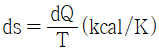
으로 나타낸다.- 어느 물체에 열을 가하면 엔트로피는 감소하고 냉각시키면 증가하는 이론적인 양이다.
(정답률: 61%)
16. LP가스의 제법이 아닌 것은?
- 원유에서 액화가스를 회수
- 석유정제공정에서 분리
- 나프타 분해생성물에서 제조
- 메탄의 부분산화법으로 제조
(정답률: 71%)
17. 액화석유가스의 저장탱크를 매설할 때의 시설기준으로 옳은 것은?
- 지하에 묻는 저장탱크는 천정, 벽 및 바닥의 두께가 각각 15cm 이상의 철근콘크리트로 만든 방에 설치한다.
- 저장탱크 주위에는 물기가 있는 모래를 채운다.
- 저장탱크 정상부와 지면과의 거리는 60cm 미만으로 해야 한다.
- 저장탱크를 2개 이상 인접하여 설치하는 경우에는 상호간에 1m 이상의 거리를 유지시켜야 한다.
(정답률: 81%)
18. 이상기체의 분자량을 구하는 식으로 옳은 것은? (단, M은 기체의 분자량, P는 기체의 압력, R은 기체상수, d는 기체의 밀도, T는 절대온도이다.)
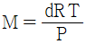
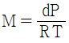
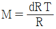
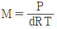
(정답률: 74%)
19. 액화프로판을 충전용기에 50kg을 충전할 수 있는 용기의 내용적(L)은? (단, 액화프로판의 정수는 2.35이다.)
- 50.0
- 58.8
- 102.5
- 117.5
(정답률: 79%)
20. 암모니아를 사용하여 질산제조의 원료를 얻는 반응식으로 가장 옳은 것은?
- 2NH3+CO→(NH2)2CO+H2O
- NH3+HNO3→NH4NO3
- 2NH3+H2SO4→(NH4)2SO4
- 4NH3+5O2→4NO+6H2O
(정답률: 86%)
2과목: 임의 구분
21. 다음 중 액화석유가스 허가대상 범위에 포함되지 않는 것은?
- 액화석유가스 충전사업
- 액화석유가스 집단공급사업
- 액화석유가스 판매사업
- 가스용품 판매사업
(정답률: 87%)
22. 염화암모늄과 아질산나트륨의 혼합물을 가열하였을 때 주로 얻을 수 있는 기체는?
- 염소
- 암모니아
- 산화질소
- 질소
(정답률: 63%)
23. 고압가스 일반제조의 기술기준 중 에어졸 제조기준에 대한 설명으로 틀린 것은?
- 에어졸은 35℃에서 그 용기의 내압이 0.5MPa 이하 이어야 하고, 에어졸의 용량이 그 용기 내용적의 95%이하일 것
- 내용적이 100cm3를 초과하는 용기는 그 용기의 제조자의 명칭 또는 기호가 표시되어 있을 것
- 용기의 내용적이 1L 이하이어야 하며, 내용적이 100cm3를 초과하는 용기의 재료는 강 또는 경금속을 사용한 것 일 것
- 에어졸의 분사제는 독성가스를 사용하지 아니할 것
(정답률: 70%)
24. 다음 중 특정고압가스로만 나열된 것은?
- 수소, 산소, 액화암모니아
- 수소, LPG, LNG, 아세틸렌
- 산소, 수소, 질소, 아르곤
- 액화염소, 액화암모니아, 질소, 아황산가스
(정답률: 74%)
25. 다음 응력변형률선도에서 인장강도를 나타내는 점은?
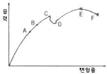
- C
- D
- E
- F
(정답률: 85%)
26. 다음 반응 중 평형상태가 압력의 영향을 받지 않는 것은?
- 2NO2⇆N2O4
- 2CO+O2⇆2CO4
- NH3+HCl⇆NH4Cl
- N2+O2⇆2NO
(정답률: 62%)
27. 온도 200℃, 부피 400L의 용기에 질소 140kg을 저장할 때 필요한 압력을 Van der waals 식을 이용하여 계산하면 약 몇 atm인가? (단, a=1.351atmㆍL2/mol2, b=0.0386L/mol이다.)
- 36.3
- 363
- 72.6
- 726
(정답률: 50%)
28. 어떤 장소의 온도를 재었더니 500°R 이었다. 이는 섭씨 온도로는 약 몇 ℃인가?
- 3.4
- 4.4
- 5.4
- 6.4
(정답률: 71%)
29. LP가스의 저장설비실 바닥면적이 15m2이라면 통풍구 크기는 몇 cm2이상이어야 하는가?
- 3000
- 3500
- 4000
- 4500
(정답률: 79%)
30. 기체의 유속은 마하(Mach)수로 나타내며 압축성 유체의 유속계산에 사용된다. 마하수에 대한 표현으로 옳은 것은? (단, 마하수는 M, 유체속도는 V, 음속은 C이다.)
- M=V×C
- M=V/C
- M=C/V
- M=V+C
(정답률: 83%)
31. 다음 중 가연성이면서 독성가스인 것은?
- 산화에틸렌
- 아황산가스
- 프로판
- 염소
(정답률: 88%)
32. 도시가스 성분 중 황화수소는 0℃, 101325Pa의 압력에서 건조한 도시가스 1m3당 몇 g을 초과해서는 안되는가?
- 0.02
- 0.⑤
- 0.2
- 0.5
(정답률: 58%)
33. 포스겐가스를 가수분해시켰을 때 주로 생성되는 것은?
- CO, CO2
- CO, Cl
- CO2, HCl
- H2CO3, HCl
(정답률: 66%)
34. 특정고압가스 사용신고를 하여야 하는 자는 저장능력이 몇 kg 이상인 액화가스 저장설비를 갖추고 특정고압가스를 사용하여야 하는가?
- 100
- 250
- 500
- 1000
(정답률: 68%)
35. 알루미늄합금 이외의 고압가스용기의 내압시험압력을 옳게 나타낸 것은?
- 아세틸렌가스 : 최고충전압력의 2배
아세틸렌가스 외의 가스 : 최고충전압력의 3분의 5배
재충전금지용기에 충전하는 압축가스 : 최고충전압력의 1.8배 - 아세틸렌가스 : 최고충전압력의 3배
아세틸렌가스 외의 가스 : 최고충전압력의 4분의 5배
재충전금지용기에 충전하는 압축가스 : 최고충전압력의 1.8배 - 아세틸렌가스 : 최고충전압력의 2배
아세틸렌가스 외의 가스 : 최고충전압력의 3분의 5배
재충전금지용기에 충전하는 압축가스 : 최고충전압력의 4분의 5배 - 아세틸렌가스 : 최고충전압력의 3배
아세틸렌가스 외의 가스 : 최고충전압력의 3분의 5배
재충전금지용기에 충전하는 압축가스 : 최고충전압력의 4분의 5배
(정답률: 52%)
36. 암모니아합성가스 분리장치에 대한 설명으로 옳은 것은?
- 메탄은 제1열교환기에서 액화하여 분리된다.
- 지소는 상압으로 공급된다.
- 에틸렌은 제3열교환기에서 액화한다.
- 일산화질소는 정촉매로 작용한다.
(정답률: 73%)
37. 어떤 용기에 수소 1g, 산소 32g, 질소 56g을 넣었더니 1기압이 되었다. 이 때 수소의 분압은 약 몇 atm인가?
- 1/89
- 1/7
- 1/3
- 1
(정답률: 88%)
38. 밀폐된 용기 내에 1atm, 27℃로 프로판과 산소가 2:8의 비율로 혼합되어 있으며, 이것이 연소하여 다음과 같은 반응을 하고 화염온도는 3000K가 되었다고 한다. 이 용기내에 발생하는 압력은 몇 atm인가? (단,ㅡ 내용적의 변화는 없다.)
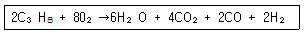
- 2
- 6
- 12
- 14
(정답률: 61%)
39. 총발열량이 10400kcal/m3, 비중이 0.64인 가스의 웨베지수는 얼마인가?
- 6656
- 9000
- 13000
- 16250
(정답률: 76%)
40. 용기에 액체질소 56kg이 충전되어 있다. 외부에서의 열이 매시간 5kcal씩 액체질소에 공급될 때 액체질소가 28kg으로 감소되는데 걸리는 시간은? (단, N2의 증발잠열은 1600cal/mol이다.)
- 16시간
- 32시간
- 160시간
- 320시간
(정답률: 49%)
3과목: 임의 구분
41. 브르돈관(Bourdon)압력계 사용시의 주의사항으로 가장 거리가 먼 것은?
- 안전장치를 한 것을 사용할 것
- 압력계에 가스를 유입시키거나 또는 빼낼 때는 신속하게 조작할 것
- 정지적으로 검사를 행하고 지시의 정확성을 확인할 것
- 압력계는 가급적 온도변화나 진동, 충격이 적은 장소에 설치할 것
(정답률: 85%)
42. 다음 중 공식(公式)의 특징에 대한 설명으로 옳은 것은?
- 양극반응의 독특한 형태이다.
- 부식속도가 느리다.
- 균일부식의 조건과 동반하여 발생한다.
- 발견하기가 쉽다.
(정답률: 87%)
43. 완전가스의 비열비(specific heat ratio)에 대한 설명 중 틀린 것은?
- 비열비 k는
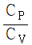
로 나타낸다. - 비열비는 온도에 관계없이 일정하다.
- 공기의 비열비는 1.4정도이다.
- 단원자보다 3원자 분사이상 기체의 비열비가 크다.
(정답률: 84%)
44. 염소의 성질에 대한 설명으로 옳은 것은?
- 염소는 암모니아로 검출할 수 있다.
- 염소는 물의 존재없이 표백작용을 한다.
- 완전히 건조된 염소는 철과 잘 반응한다.
- 염소 폭명기는 냉암소에서도 폭발하여 염화수소가 된다.,
(정답률: 80%)
45. 피셔(fisher)식 정압기의 2차압 이상상승의 원인에 해당하는 것은?
- 정압기 능력부족
- 필터의 먼지류의 막힘
- Pilot suppluy valve 에서의 누설
- 파일럿의 오리피스의 녹 막힘
(정답률: 87%)
46. 다음 그림은 정압기의 정상상태에서 유량과 2차 압력과의 관계를 나타낸 것이다. A, B, C에 해당되는 용어를 순서대로 옳게 나타낸 것은?
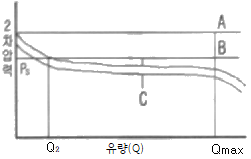
- A : Lock up, B : Off set, C : Shift
- A : Off set, B : Lock up, C : Shift
- A : Shift, B : Off set, C : Lock up
- A : Shift, B : Lock up, C : Off set
(정답률: 87%)
47. 다음 가스 중 임계온도가 높은 것부터 나열된 것은?
- O2＞Cl2＞N2＞H2
- Cl2＞O2＞N2＞H2
- N2＞O2＞Cl2＞H2
- H2＞N2＞Cl2＞O2
(정답률: 75%)
48. 다음 중 흡수식 냉동기에 사용되는 냉매는? (단, 흡수제는 물이다.)
- 톨루엔
- 염화메틸
- 물
- 암모니아
(정답률: 77%)
49. 용접이음의 특징에 대한 설명으로 옳은 것은?
- 조인트 효율이 낮다.
- 기밀성 및 수밍성이 좋다.
- 진동의 감쇠시키기 쉽다.
- 응력집중에 둔감하다.
(정답률: 92%)
50. 도시가스사업법에서 사용되는 용어의 정의를 설명한 것 중 틀린 것은?
- 도시가스 사업은 수요자에게 연료용 가스를 공급하는 사업이다.
- 가스 도매사업은 일반 도시가스 사업자 외의 자가 일반 도시가스사업자 또는 산업자원부령이 정하는 대량수요자에게 천연가스(액화한 것 포함)를 공급하는 사업을 말한다.
- 도시가스사업자는 가스를 제조하여 일반 수요자에게 용기로 공급하는 사업자를 말한다.
- 가스사용시설은 가스공급시설외의 가스사용자의 시설로서 산업자원부령이 정하는 것이다.
(정답률: 79%)
51. 산소봄베에 산소를 충전하고 온도 35℃에서 20MPa로 되도록 하려면 0℃에서 약 몇 MPa의 압력까지 충전해야 하는가?
- 13.5
- 17.7
- 22.6
- 26.3
(정답률: 59%)
52. 완전가스에서 등엔탈피 변화는 어느 것인가?
- 등압변화
- 등적변화
- 등온변화
- 단열변화
(정답률: 53%)
53. 암모니아의 물리적 성질에 대한 설명 중 틀린 것은?
- 쉽게 액화한다.
- 증발잠열이 크다.
- 자극성의 냄새가 난다.
- 물에 녹지 않는다.
(정답률: 92%)
54. 아세틸렌 제조시 청정제로 사용되지 않는 것은?
- 리가솔
- 카타리솔
- 에퓨렌
- 진타론
(정답률: 72%)
55. M 타입의 자동차 또는 LCD TV를 조립, 완성한 후 부적합수(결정수)를 점검한 데이터에는 어떤 관리도를 사용하는가?
- P 관리도
- nP 관리도
- c 관리도
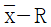
관리도
(정답률: 72%)
56. 이항분포(Binomial distribution)의 특징으로 가장 옳은 것은?
- P=0일 때는 평균치에 대하여 좌ㆍ우 대칭이다.
- P≤0.1이고, nP=0.1~10일 때는 포아송 분포에 근사한다.
- 부적합품의 출현 개수에 대한 표준편차는 D(x)=nP이다.
- P≤0.5이고, nP≥5일 때는 포아송 분포에 근사한다.
(정답률: 78%)
57. 연간 소요량 4000개인 어떤 부품의 발주비용은 매회 200원이며, 부품단가는 100원, 연간 재고유지비율이 10%일 때 F.W.Harris식에 의한 경제적 주문량은 얼마인가?
- 40개/회
- 400개/회
- 1000개/회
- 1300개/회
(정답률: 73%)
58. 다음 중 검사를 판정의 대상에 의한 분류가 아닌 것은?
- 관리 샘플링 검사
- 로트별 샘플링검사
- 전수검사
- 출하검사
(정답률: 87%)
59. “무결점 운동“이라고 불리우는 것으로 품질개선을 위한 동기부여 프로그램은 어느 것인가?
- TOC
- ZD
- MIL-STD
- ISO
(정답률: 85%)
60. 제품공정 분석표(Product Process Chart) 작성시 가공시간 기입법으로 가장 올바른 것은?
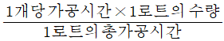
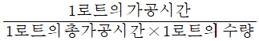
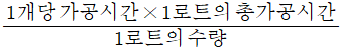
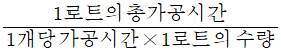
(정답률: 70%)